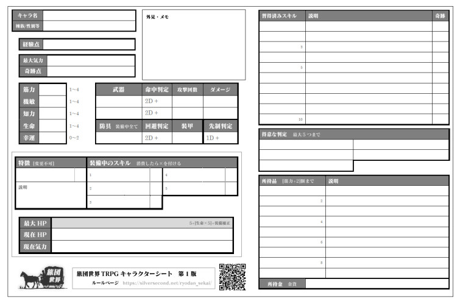

|
||||
| ○更新履歴 | ||
|
2022/08/27 Ver1.5に調整。【筋力射撃武器】を2回×筋力ダメージへ調整。「＜出目＞」の文字だけ消えていたのを修正。 2022/05/13 Ver1.4に調整。気力平均化ルールの端数切捨を四捨五入に変更。 2022/02/22 Ver1.3に調整。落下ダメージ修正。誤解が減るよう表現を一部修正。 2021/02/20 Ver1.2に調整。【先制行動＋3】→【先制力＋3】に。戦闘の「待機」処理を追加。 2020/09/06 Ver1.1にバランス調整。【大きなカバン】と射撃系装備に修正。 2020/04/01 正式公開！ 『チュートリアル』リプレイを追加！ 2020/03/06 Ver1.0 先行リリース 2014/06/01 Ver0.7 作成開始 |
| ◆基本的な用語 | ||
|
●ＧＭ：ゲームマスター。司会・進行・審判・ＮＰＣ役をつとめます。 ●ＰＣ：プレイヤーキャラクター。プレイヤーが担当するゲーム内キャラクターです。 ●ＮＰＣ：ノンプレイヤーキャラクター。主にGMが担当するゲーム内キャラクターです。 ●1D：「6面サイコロ1個の出目」という意味です。 ●2D：「6面サイコロ2個を振って出た目の合計値」という意味です。 ●判定：【サイコロを振って、行動が成功したか失敗したかを決めること】を指します。 ●セッション：ここではプレイヤーが一回集まって、一回お別れするまでの1プレイを指します。本ルール内ではシナリオが終わらなくても、お別れしたら1セッションと数えます。 ●シナリオ：本ルールでは「1つのお話が完了するまでのプレイ」をシナリオと呼びます。場合によっては1シナリオが複数回のセッションにまたがる場合があります。 【※判定時の端数は切捨】 計算後の端数は基本的に全て「切り捨て」とします。 <例> 計算結果が 5÷2＝2.5 となった場合、0.5を切り捨てて結果を【2】として扱います。 |
| １ | はじめに |
| １－１．どんなゲーム？ | ||
|
このページに記載されているのは、複数の人間が集まって会話をしながら進めていくゲーム、『テーブルトークRPG（TRPG）』を遊ぶためのルールです。
このTRPGルールは、 「基本的な判定は2D6ルール（六面体のサイコロ2つを振る）」 「GMを持ち回りしやすいザツな世界設定」 「シナリオや体験の方向性を特に定めないファンタジー世界を想定」 「ルールをあまり調べ直さなくても遊べる程度の簡単さ」 「新キャラで途中参加しても、先行キャラより不利に感じにくいシステム」 を目標として設計されています。 不特定多数の人がみんなでGMとPCを入れ替わりながら、他GMを気にせずそれぞれの世界を展開でき、新しいPCとベテランPCが一緒に遊んでも不公平感が出にくい、そしてちょっとの判断力が要求されるシステムを目指しています。 このルールは、気がつけばGMばかりやっている筆者が「たまにはプレイヤーをやりたいなあ、そうだ自作TRPGならすぐ遊べる人を集められるのでは？」と思いながら作ったものでしたが、結局プレイヤーとして遊ぶこともなく、今はリプレイ書籍を作るために使われています。 【プレイに必要なもの】 ・このルールページ ・筆記用具（鉛筆・消しゴム・スプレッドシート・携帯電話のメモ帳など） ・自分のキャラクターシート（ダウンロード可能・PDF形式、236KB） ・サイコロ2～3個（サイコロを振れるアプリやサイトでも可） ・一緒に遊んでくれる人（集めるのが大変！）。ＧＭ1人、プレイヤーは2～6人推奨。 |
| ２ | キャラ作成 編 |
| ２－１．作成の手順 | ||||||||||||||||||||||||||||||||||||||||||||||||||||||||||||||||||||||||
| さあ、冒険に出る前にあなたのキャラクターを作りましょう。 使いたい人は、以下のキャラクターシートをダウンロードして開いてください。 これを使わなくとも、メモ帳などにデータを書き込む形でも構いません。 【キャラクターシートのダウンロード】 （ryodan_character_seat_form.pdf 236KB） ※PDF形式。パソコンの場合は右クリックから保存してください。印刷も可能です。  ・「Adobe Acrobat Reader」アプリがインストールされていれば、パソコンやスマートフォン上でこのシートを「書き換えたり」、書き込んだ情報を「保存」することが可能です。 ◆Adobe Acrobat Readerのダウンロード → 【パソコン用】 【Androidスマホ用】 【iPhone / iPad用】 キャラクターシートに、以下の内容を記入していきます。 ＜基本情報＞ 【名前と種族・性別】 『旅団世界TRPG』では種族や性別による能力差はありません。好みのイメージだけで決めて大丈夫です。
【能力値】 合計9ポイントを以下の5パラメータに振り分けてください。 数値は設定できる値の範囲です。
能力値の目安 筋力～生命 1：一般人の平均 2：優れている 3：プロ級に優秀 4：その道の達人になれる 5～：化け物 幸運 0：一般人並み 1：人より少し運がいい 2～：目に見えて運がいい・愛嬌がある・勘がいい ※能力値は成長しませんが「調整」することはでき、1シナリオ終了した時点で「能力を1点だけ減らして別のところに1点加算する」ことが可能です（能力値の合計や限界値は変わりません）。 ＜技術や特徴の設定＞
＜所持品＞
＜その他の欄への記入＞
＜武器・防具欄への記入＞ 装備する武器・防具を記入し、戦闘で使う判定やデータをあらかじめ計算しておきます。
|
||||||||||||||||||||||||||||||||||||||||||||||||||||||||||||||||||||||||
| ２－２．シート見本 | ||
|
ここまでの作業をこなしていれば、プレイに必要なキャラクター情報はすべてそろいます！ 以下のように書けていればバッチリです。 ＜できあがったキャラクターシートの見本＞ ▼選択すると拡大 ※どのみちシナリオ開始時に書くことになるので、この見本では一足先に「装備中のスキル」欄に「習得済みスキル」と同じ内容を書き込んでいます。 ※分かるならば、説明文は短くしても構いません（1戦闘ターンを1Tと書く、文章を縮めるなど）。 ※紙の場合、「15→10→7→12」のように、変化後の数値を矢印で後ろに追記していくと毎回消さなくてよいので管理が楽になります。 プレイが一区切りするか、欄からあふれそうになったら消しゴムで消します。 |
{kind=link}
| ３ | データ 編 |
| ３－１．スキル一覧 | ||||||||||||||||||||||||||||||||||||||||||||||||||||||||||||||||||||||||||||||||||||||||||||||||||||||||||||||||||||||||||||||||||||||||||||||||||||||||||||||||||||||||||||||||||||||||||||||||||||||||||||||||||||||||||||||||||||||||||||||||||||||||||||||||||||||||||||||||||||||||||||||||||||||||||||||||||||||||||||||||||||||||||||||||||||||||||||||||||||||||||||||||||||||||||||||||||||||||||||||||||||||||||||||||||||||||||||||||||||||||||||||||||||||||||||||||||||||||||||||||||||||||||||||||||||||||||||||||||||||||||||||||||||||||||||||||||||||||||||||||||||||||||||||||||||||||||||||||||||||||||||
| 【スキル一覧】 ・スキルは、同じものを複数習得・装備することはできません。1種類1つまでです。 ・【経験点10点】を消費することで新たなスキルを習得することができます。所有できるスキルは最大10種類までです。 ここで使われる用語の意味を以下に記載します。最初は飛ばして、細かい部分の意味が分からなくなったときにお読みください。
【確率維持スキルの判定例】 賢者「騎士に【治療】（↑5）スキルを使用！」 GM「ではまず維持判定！ 【1D+幸運】で【5】以上が出れば次も使えるよ」 賢者「（ｺﾛｺﾛ…）出目2、幸運2なので4！ 惜しい、失敗！」 GM「では【治療】を消費！ シートの【装備中のスキル】欄の【治療】の横に【×マーク】を付けておいてね。消費済みになっても今回のスキル効果自体は発揮されるので、回復量を【1D+幸運】で振ってみて」 賢者「（ｺﾛｺﾛ…）出目6、幸運2なので騎士を8点回復！ もう回復はできないからみんながんばって！」 騎士「分かった、あとは何とかしてみせる！」
【攻撃系スキル一覧】（名前を選択すると詳細説明へ）
【防御系スキル一覧】（名前を選択すると詳細説明へ）
【習熟系スキル一覧】（名前を選択すると詳細説明へ）
【特殊系スキル一覧】（名前を選択すると詳細説明へ）
【冒険系スキル一覧】（名前を選択すると詳細説明へ）
【運命操作系スキル一覧】（名前を選択すると詳細説明へ）
※スキルのデザインについて 新たにスキルを考える上での参考にしてください。 ・効果が小さいものは【常時･宣言】にする。基本は効果の範囲を限定させて調整する。 → 【軽中量習熟 I】のように【特定の武器】の【命中判定だけ+1】にする、という具合。 【機敏を1上げる＝命中・回避どちらも+1される】のに比べて効果が限定的になります。 【常時・宣言】にするなら、【能力値0.5～1相当】の効果が適切でしょう。 ・探索系スキルは戦闘系に比べ使う場面が少ないため、補正値は大きめにする（基本は+3）。 ・強力な効果のスキルや便利なスキルには、相応のコストを設定する。 → スキル消費のコスト： 【スキル維持が難しい】か【強制消費】である。 → ポイント消費のコスト： 【気力を消費】【奇跡点を消費】【HP消費】【金貨消費】など → 成功率のコスト： 【2D+能力値で目標値10に成功しないと無効】など → 再使用までのコスト： 【1行動を消費】【1日に1回】【1時間に1回】など |
||||||||||||||||||||||||||||||||||||||||||||||||||||||||||||||||||||||||||||||||||||||||||||||||||||||||||||||||||||||||||||||||||||||||||||||||||||||||||||||||||||||||||||||||||||||||||||||||||||||||||||||||||||||||||||||||||||||||||||||||||||||||||||||||||||||||||||||||||||||||||||||||||||||||||||||||||||||||||||||||||||||||||||||||||||||||||||||||||||||||||||||||||||||||||||||||||||||||||||||||||||||||||||||||||||||||||||||||||||||||||||||||||||||||||||||||||||||||||||||||||||||||||||||||||||||||||||||||||||||||||||||||||||||||||||||||||||||||||||||||||||||||||||||||||||||||||||||||||||||||||||
| ３－２．特徴一覧 | ||||||||||||||||||||||||||||||||||||||||||||||||||||||||||||||||||||||||||||||||||||||||||||||
【「特徴」について】 以下の【特徴】は、キャラクター作成時の「特徴」欄にのみセット可能です。一度選択すると、二度と変更することはできません。 ※キャラクターの【特徴】欄には、これらの【特徴】以外にも【スキル】を設定することが可能です。
※【特徴】のデザインについて 【特徴】は最大1つしか取れないことから【スキルより少し強めの効果】に設定しています。 基準にしているのは以下のような内容です。新たに考える際の参考にしてください。 ・おおよその基準は【能力値+1相当】くらい →【自己再生(HP回復の期待値4.5～7.5)】は、ほぼ生命の能力値+1～1.5に相当。ただし[生命]そのものは増えないのと、HPは元々回復しやすいので評価3割引くらい。 →【狂戦士】は命中＋1、回避－１、筋力＋1なので能力補正的にはおよそ＋1です。 →【特異な種族】も標準以上に特化しやすいのですがそれでは微妙に足りないので、1日1回、出目＋1できる効果を与えています。 |
||||||||||||||||||||||||||||||||||||||||||||||||||||||||||||||||||||||||||||||||||||||||||||||
| ３－３．得意な判定 一覧 | ||||||||||||||||||||||||||||||||||||||||||||||||||||||||||||||||||||||||||||||||||||||||||||||||||
| 【得意な判定】 あなたのキャラクターの個性に応じて、キャラ作成時に「得意な判定」を1つ選択できます。 ゲーム中に「得意な判定」に該当する行為を行う場合、【コストなしで追加で判定を1回振り足し】、 出た結果のうち【好きな結果を採用】することができます。 また、「得意な判定」は【スキル】を取らないと判定を許可してもらえないような専門技術でも判定が可能になります。 プレイヤーは、「得意な判定」が使えそうな場面が来たらGMに聞いてみてください。GMも、プレイヤー全員の得意な判定を把握しきれていないことが多いはずです。
※他にも、万能すぎないものであれば好きに足して構いません。 |
||||||||||||||||||||||||||||||||||||||||||||||||||||||||||||||||||||||||||||||||||||||||||||||||||
| ３－４．装備一覧 | |||||||||||||||||||||||||||||||||||||||||||||||||||||||||||||||||||||||||||||||||||||||||||||||||||||||||||||||||||||||||||||||||||||||||||||||||||||||||||||||||||||||||||||||||||||||||||||||||
基本ルールでの装備は、大きく分けて「武器」「特殊装備」「防具」の3種があります。
【武器一覧】（名前を選択すると詳細説明へ） 基本的な武器です。「近接」は「味方前衛から敵前衛」へ、「射撃」は「どこにいても敵前衛～後衛」を攻撃できます。
【特殊装備一覧】（名前を選択すると詳細説明へ） 特殊装備は支援向けです。他の装備を一切持たない場合だけ装備できます。
【防具一覧】（名前を選択すると詳細説明へ） 鎧と盾は同時に装備することができます。
・武器は基本的に1つだけ装備可能です。 ・武器は重さや機能の違いだけで分類されているので、プレイヤーは選んだ装備がどんな種類・形状なのか設定してください（例：「この中量武器はロングソードだ！」等）。 ＜近接武器＞ 【味方前衛から敵前衛】を攻撃できる武器です。それ以上離れた相手には攻撃できません。複数回攻撃の武器は、それぞれ命中判定を振って下さい。 なお、相手を殺したくない場合などにおいて【攻撃回数を減らす】ことも可能です。 その場合、【命中判定を振る前】に【何回分攻撃するか宣言】してください。
＜射撃武器＞ 味方後衛からでも敵前衛～敵後衛の好きな相手を攻撃できます。
＜特殊装備＞ 他の「武器・防具・特殊装備」の装備を一切所有しない者が1つだけ扱える装備です。サポートに回りたいキャラクターは重宝するでしょう。 ※基本ルールにはありませんが、「武器・防具・特殊装備」以外のものであれば同時に装備することが可能です。例えば「衣服」にあたるアイテムなど。
＜防具＞ 守りを固める装備です。【装甲】はその数値分だけ【1撃のダメージを減少】させます。 「鎧」を重ね着したり、「盾」を2つ装備したりはできません。防具には【装備条件】があるので注意して下さい。
【<装甲>の目安】 0点：革鎧や防具なし。弱い鎧の場合、装甲は増えずHPの増加だけで表現されます。 1点：金属鎧。人間が装備できる防具の限界がようやく装甲1点です。 2点：全身が石でできているなど中身まで硬い場合や、非常に高い技術力で生み出されたもの。ここまで来ると、短剣やムチなどの【軽量武器】はほとんど通用しません。 |
|||||||||||||||||||||||||||||||||||||||||||||||||||||||||||||||||||||||||||||||||||||||||||||||||||||||||||||||||||||||||||||||||||||||||||||||||||||||||||||||||||||||||||||||||||||||||||||||||
| ３－５．アイテム一覧 | ||||||||||||||||||||||||||||||||||||||||||||||||||||||||||||||||||||||||||||||||||||||||||||||||||||||||||
PCは【アイテム所持数】の範囲内で以下のアイテムを購入・所有することができます。アイテムの売却も可能で、売却額は【元の半額】（端数切捨）になります。
一言説明に「1行動で～」あるいは「瞬間」と書かれているアイテムは戦闘中にも使用できます。「10分で～」とあるものは戦闘中には使用できません。
|
||||||||||||||||||||||||||||||||||||||||||||||||||||||||||||||||||||||||||||||||||||||||||||||||||||||||||
| ３－６．さらなる強化 | |||||||||||||||||||||||||||||||||||||||||||||||||||||||||||||||||||||||||||||||||||||||||||||||||||||
多額の金貨を支払うことで、武器や防具をさらに強化することができます。
【武器の強化】（名前を選択すると詳細説明へ）
【防具強化 詳細説明】
【術具強化 詳細説明】
|
|||||||||||||||||||||||||||||||||||||||||||||||||||||||||||||||||||||||||||||||||||||||||||||||||||||
| ４ | ルール |
| ４－１．シナリオ開始時の準備 | ||||||||||
| 「新たにシナリオを開始するとき」は、まず以下の準備を行ってください。 ※シナリオの途中から始める場合は、ここの手順はおこないません。 1．GMからシナリオの概要説明 2．PCの使用スキルの選択 3．HPと気力を最大値に戻す a．[選択ルール] 気力ポイントの平均化
|
||||||||||
| ４－２．判定について | ||||||||||||||||||||||||||||||||||||||||||||||||||||||||||
| 全ての基本となる「判定」についてのルールを以下に記載します。 1. 基本的な判定 「目標値判定」 2. 勝負する場合 「対抗判定」 3. クリティカルとファンブル 4. 目標値の目安
|
||||||||||||||||||||||||||||||||||||||||||||||||||||||||||
| ４－３．基本ルール | |||||||||||||
| 行動時に使えるプレイヤーの選択肢として「スキル使用」「気力」「奇跡」「休息判定」の4つのルールについて紹介した後、最後にGM向けに「パート切り替わり時のスキル変更」について説明します。 1. スキルの使用 2. 気力の使用（振り直し） 3. 奇跡点の使用 4. 休息による回復・睡眠 5. パート切り替わり時のスキル変更
|
|||||||||||||
| ４－４．戦闘ルール | ||||||||||||
| 戦闘ルールです。基本は以下の手順を繰り返します。 【1．戦闘開始時 隊列の宣言】 ↓ ┌→ 【2．戦闘ターン開始時 行動順決定】 ↑ ↓ ↑ 【3．手番が来たら各キャラクターの行動を行う】 ↑ ↓ └←【4．全員の手番が終わったら1戦闘ターン終了。「2」へ戻る】 ※その他のルール
|
||||||||||||
| ４－５．能力値の用途 | ||||||||||||||
それぞれの能力値で判定できる行為は以下の通りです。
|
||||||||||||||
| ４－６．報酬・成長 | |||||||||||||||||||||||||||||||||||||||||||||||||
| 1セッションあるいは1シナリオが終わった後、GMは報酬をプレイヤーにあげてください。 報酬とは「経験点」や「金貨」、「思い出報酬」の3つを指します。 ※シナリオ＝1話分。 セッション＝とにかく1回始めて終わるまでの間。 と使い分けています。 1．経験点の獲得について 2．成長内容 3．報酬金額について 4．思い出報酬
|
|||||||||||||||||||||||||||||||||||||||||||||||||
| ４－７．オプションルール | |||||||||||||||||||||||||||||||||||||||||||||||||||||||||||||||||||||||||||||||||||||||||||||||||||||||||||||||||||||
| その他のオプションルールです。GMが必要になった場合に使ってください。 1．ランダム印象表 2．恐怖遭遇表 3．落下ダメージ 4．簡易判定（サイコロ固定値化）
|
|||||||||||||||||||||||||||||||||||||||||||||||||||||||||||||||||||||||||||||||||||||||||||||||||||||||||||||||||||||
| ５ | その他 |